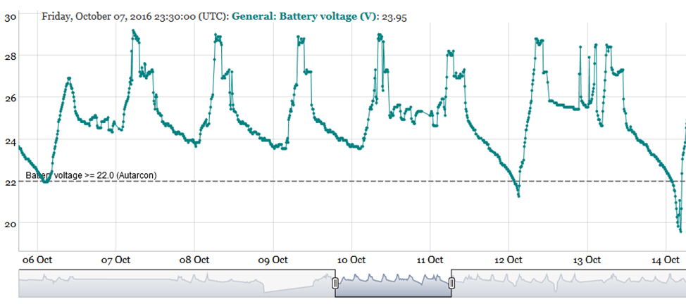

The explore panel (see Figure 1) enables the user to:
Inspect online and offline data using different temporal aggregation levels (i.e. raw data or median values for 10 minutes, 1 hour or 1 day)
Export data
With the panel on the left hand sight the user can change the initial settings (e.g. temporal data ag-gregation level, select different sampling points, parameters or date ranges).
The two plots on the right hand sight are coupled (i.e. both share the same x-axis limits), which ena-bles an easy comparison in case two different parameters are selected for top and bottom plot.
All available features are described in detail in the following sub-chapters.

The “select temporal aggregation” input menu offers four different options as shown below:
 Figure 2 Select temporal aggregation (default setting)
Figure 2 Select temporal aggregation (default setting)
Only in case of “raw” no temporal aggregation is performed and just the raw data will be returned. However, this can be quite time consuming in case of large data amounts (e.g. for online data rec-orded at short time intervals).
All other options perform a temporal aggregation of the underlying data by calculating the median values for all parameters for 10 minutes (selection: “10min”), hourly (selection: “hour”) or daily (se-lection: “day”) time periods. By default, the R reporting tool aggregates the parameter values as 10 minutes median values.
3.1.2 Select a time zone
By default, all data are presented in UTC. However, it is also possible to transform the time zone to the site’s local time (i.e. Asia/Calcutta) as shown below in Figure 3.
 Figure 3 Select a time zone (default setting)
Figure 3 Select a time zone (default setting)
3.1.3 Select date range
By default the date range starts on 2016-09-05 and ends on 2016-10-31 as shown below in Figure 4.
 Figure 4 Select a date range (default setting)
Figure 4 Select a date range (default setting)
However, the date range can be changed easily by clicking with the mouse into the start/end field, which opens a calender for specifying new start/end dates as shown below in Figure 5. The selected date range is the range displayed at the largest zoom level. In the interactive graph the zoom function can be used to zoom to specific date/time ranges within the specified date range.
Figure 5 Select a date range (change the default setting)
3.1.4 Fix date range
The checkbox option Fix daterange (Figure 6) is relevant in case of interactive zooms into plots.
Figure 6 Fix daterange (default setting)
In case the Fix daterange option is disabled (default setting, see Figure 6 above) and the zoom is set to a specific period (e.g. ~ 2016-10-10 – ~ 2016-10-11 as shown in Figure 7), the zoom level will be lost (Figure 8) if the parameterisation is changed (e.g. switching from “10min” to “hour” values).
 Figure 7 Interactive zoom to user defined period (~2016-10-10 to ~2016-10-11) with 10min aggregation

Figure 8 Plot with disabled “Fix daterange” after change of temporal aggregation (“hour”)
For avoiding this behaviour it is necessary to enable the Fix daterange checkbox and the selected zoom level will remain even when the parameterisation is changed afterwards as shown in Figure 9.

Figure 9 Plot with enabled “Fix daterange”: changed temporal aggregation (“hour”)
3.1.5 Select sampling point(s)
By default all available sampling points are selected, as shown below in Figure 10.

Figure 10 Select a sampling point (default setting)
For removal of selected sampling points they need to be marked (by holding Ctrl and clicking on them with the mouse, see Figure 11, left) and subsequently deleted by pressing the Delete button on your keyboard. The deleted sampling points are still available in a drop down menu (see Figure 11, right), where they can be easily added again (i.e. by selecting them with the mouse).
Figure 11 Select a sampling point (change default setting)
3.1.6 Select parameter(s) for plot 1/2
By default, one parameter for each plot is pre-selected (i.e. battery voltage for plot1 and total chlorine for plot2), as shown below in Figure 12.

Figure 12 Select parameter(s) for plot 1/2 (default setting)
One the one hand it is possible to select a different parameter for each plot (based on the available online/offline parameters for the Haridwar site in the dropdown list) as shown in Figure 13 below:
Figure 13 Select parameter(s) for plot 1 and 2 (change default setting)
On the other hand it is also possible to select multiple parameters for one plot. However, plotting multiple parameters with completely different data value ranges (e.g. parameter1: 0 – 1, parameter2: 100-10000) should be avoided as the graph does not support multiple y axis.
3.1.7 Add thresholds to plot 1+2
By default, threshold parameters are added to both plots for parameters, for which thresholds were predefined (see Figure 14, example graph with thresholds e.g. Figure 9). This feature can be disabled by unchecking the checkbox. In the latter case no horizontal lines will be plotted if a selected param-eter has a pre-defined threshold.

Figure 14 Add thresholds to plots 1+2 (default setting)
Note: The thresholds can be modified by the user, which is described here.
3.1.8 Download options
There are two different download options available:
Download data: download the entire dataset of plot 1 or 2 as CSV with the selected tem-poral aggregation level (Chapter 3.1.1), time zone (Chapter 3.1.2) and date range (Chapter 3.1.3) at all selected sampling points (Chapter 3.1.5) for the parameters in plot 1 or 2 (Chapter 3.1.6), respectively.
Download plot: downloads plot 1 and 2 as HTML document (including all data points of selected temporal aggregation). This document still provides interactive zooming capabilities for the selected dataset and can be send as stand-alone HTML document via email.